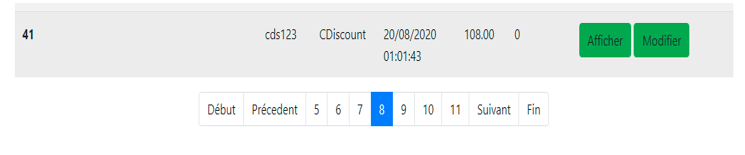

Entreprise Cobra
Introduction
Le projet sur lequel j’ai travaillé est un site de facturation qui permet de gérer des commandes pour une entreprise : Cobra. Cette société vend des pièces d’automobile comme des par-brises, des portes, des vitres, des pots d’échappements etc. Ce site est destiné à l’utilisation par les employés, il permet d’avoir accès a la liste des produits proposé par l’entreprise, avoir accès à la liste des clients déjà enregistrés pour créer des factures, des BLS, des avoirs, des devis en fonction du souhait du client et avoir accès très rapidement à l’ensemble de ces données. Mon rôle durant ce stage a été de remplir les mises à jour sur differentes fonctionalités du site web dont mon tuteur me faisait part à travers dfferentes tâches.
Première amélioration
J’ai dû mettre en place une recherche dynamique qui permet de rechercher en temps réel dans tous les éléments de la base de données. Ceci afin d’afficher dans le tableau les éléments correspondants à la recherche demandée peu importe le champs utilisé. Cela en temps réel, dès que l’utilisateur appui sur une touche d’un des inputs, cela actualise le tableau des résultats en dessous en temps réel, en utilisant la méthode Ajax.
Seconde tâches
La mission suivante m’a permi d’aborder une autre partie de la bibliothèque : le modal. Pour l’ajout d’un système de suppression possible, en plus des boutons "Afficher" (rediriger vers la page invoicesDetail.html) et "Modifier" (rediriger vers la page editInvoices.html) de facture uniquement si elle n’a pas de numéro, avec un bouton supprimer et un modal qui demande confirmation. L’ajax qui est ensuite appelé envoie le numéro de la facture qui a été sélectionné à la page deleteInvoices.html. Il lancera une requête SQL préparée par mon responsable pour supprimer de la BDD la facture correspondante :
ou
3 eme tâches
Mise en place de pagination PHP sur la page advanced_search. Les résultats étaient limités à 100 dans le tableau jusqu’à présent. Nous allons utiliser la méthode de pagination pour pouvoir parcourir l’ensemble des résultats. Nous affichons désormais au début quelques pages qui suivent la première et quand on dépasse ce stade nous affichons les trois pages précédentes, les trois suivantes de celles ou l'on se situe. Il y a un bouton début et un bouton fin qui nous permettent de se déplacer plus rapidement si on se trouve en milieu de recherche. Grâce aux requêtes progressives on charge de la BDD que ce que l’on veut afficher, et non toute la BDD dès le début.
Conclusion
Durant ce stage, j’ai appris à travailler en autonomie, à réfléchir par moi-même pour trouver des solutions ou bien de nouvelles idées pour résoudre diverses problèmes, mais également à beaucoup me documenter, car très souvent un problème que l’on rencontre peut déjà avoir été résolu par le passé. J’ai appris à écouter les reproches que me faisait mon tuteur pour ne plus recommencer les mêmes, qui m’aurait gêné dans le futur. Mon responsable de formation a été très attentionné avec moi, j’ai pu souvent lui poser des questions sur des problèmes rencontrés ou je ne pouvais plus avancer, s’agissant d’un projet en cours de route, beaucoup de méthodes m'étaient inconnues, j’en ai appris davantage sur le PHP, l’Ajax, les bibliothèque JS, sur Bootstrap et sur les requêtes SQL.